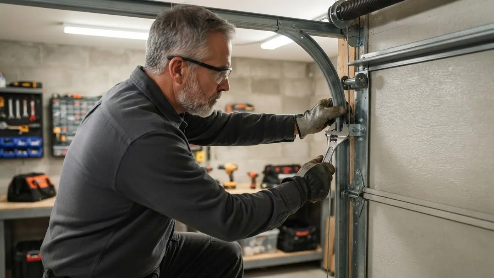
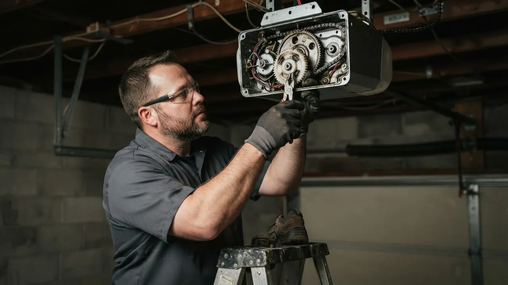
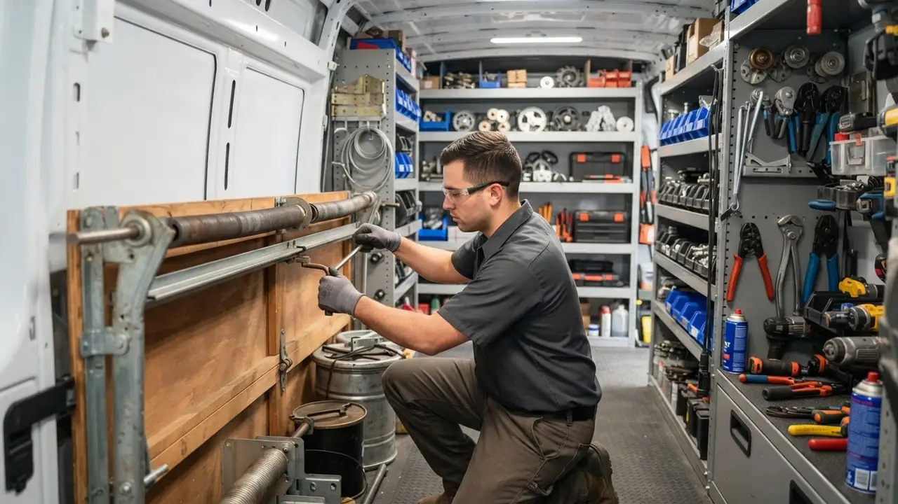

Garage Door Bracket Repair
Garage Door Bracket Repair Wilmington DE Done Same-Day
Garage Door Bracket Repair Wilmington DE is the fastest way to stop a sagging, grinding door before it drops off the track. We straighten bent steel, swap snapped track brackets and re-secure hinges on doors all over New Castle County. If your door shudders, rubs the jamb or hangs crooked, call (302) 556-5080 and we will get a tech out today.
Service overview
Garage Door Bracket Repair Wilmington DE Explained
Garage Door Bracket Repair Wilmington DE is the structural fix that re-anchors the steel plates holding your door to the track, the torsion tube and the opener rail. Brackets carry every pound of a 150 to 250 pound door, so when one bends, the whole panel stack shifts. We pull the door down, inspect each bracket, track bracket and hinge plate, then straighten or replace what has failed and re-torque every bolt to spec.
Wilmington doors take a beating. Winter road salt off I-95 and Route 202 eats galvanized steel, summer humidity swells wooden jambs in Trolley Square and The Highlands, and a single bump from a car in a tight Riverfront alley bends a bottom bracket flat. If you have been searching garage door bracket repair Wilmington DE near me after a door-off-track scare, we handle that call seven days a week, including same day garage door bracket repair Wilmington DE for doors stuck open or jammed halfway.

Practical benefits
Why Bracket Repair Beats Waiting
A bent bracket is not cosmetic. It loads the torsion springs unevenly, chews through nylon rollers and can snap a galvanized steel cable under tension. Fixing it early costs a fraction of a full track and panel rebuild.
Stops Cable Snap Risk
A bracket that has pulled loose lets the cable drum shift, and a galvanized steel cable under 200 pounds of tension can whip when it lets go. We re-secure the bracket and re-seat the drum before that happens, usually in under 90 minutes.
Ends The Grinding Noise
Most grinding complaints trace back to a bracket that has shifted and is pinching a steel roller against the track. Straightening the bracket and re-aligning the roller kills the noise at the source instead of masking it with lubricant.
Protects Springs And Panels
When one bracket sags, the torsion springs on that side do more work, and spring life drops fast. Correcting the bracket geometry keeps both springs loaded evenly and stops panels from cracking at the hinge stile.
Cheaper Than A Rebuild
A bracket repair or bracket replacement runs a fraction of what a full track replacement costs. We replace the failed bracket, check the rest of the hardware, and tell you honestly if anything else is close to failing.
How service works
How Our Bracket Repair Process Works
Every job follows the same five steps, whether it is a single bent bracket in Little Italy or a full set of track brackets on a commercial door in Southbridge. You get a straight answer on what failed and what it costs before we start.
STEP 01
Phone Triage
Call (302) 556-5080 and describe what the door is doing. If it is jammed open or hanging off the track, we treat it as an emergency and dispatch the nearest truck. Most Wilmington calls get a two to four hour arrival window.
Tools and methods
Tools And Methods We Use
Power Drill And Socket Wrench Set
Used to remove and re-install bracket fasteners and re-torque every bolt on the track to spec. We carry both standard and metric sockets so we are not stuck on an odd bolt size.
C-Clamps And Vise Grips
Used to lock the door and torsion tube in place while we work. A door under spring tension will move if you do not clamp it, and that is how techs get hurt.
Winding Bars
Used any time we need to release or re-tension torsion springs to access a bracket. Winding bars are the only safe way to handle spring tension, and we never substitute a screwdriver.
Tape Measure And Level
Used to confirm the track is plumb and the brackets are square. A bracket that looks straight to the eye can still be a quarter inch out, which is enough to make the door rub.
Rubber Mallet And Vise
Used to straighten minor bracket bends without cracking the steel or marring the finish. Brackets that are cracked or rusted through get replaced, not straightened.
Safety Glasses And Gloves
Standard on every job. Cables under tension, metal shavings and spring hardware make eye protection non-negotiable, and we wear it on every call.
ANSI/DASMA 102 Compliance
Every bracket repair and replacement follows ANSI/DASMA 102, the industry standard for garage door hardware and safety. That means correct bracket ratings for the door weight, correct fastener grades, and correct installation torque.
UL 325 Safety Verification
After any bracket repair, we verify the door meets UL 325 safety requirements, including the auto-reverse function and photo-eye sensors. A door that runs smooth but fails the safety check is not a finished job.
Five-Cycle Test Protocol
We run every repaired door through five full open-close cycles before we leave. If anything rubs, binds or makes noise during those cycles, we fix it on the spot rather than hoping it settles in.
Root-Cause Diagnosis
A bent bracket almost always has a cause, a misaligned track, a worn roller, a spring that has lost tension. We diagnose the cause so the repair actually holds instead of failing again in three months.

Where this service fits
When To Call For Bracket Repair
Your door came off the track and you can see a bent bracket on the bottom panel.
This is an emergency call. We dispatch a tech to reset the door, replace the bent bracket, and re-align the track. We do not try to bend the door back into place, we fix the hardware that failed. Door is back on the track the same day, running smooth, with new hardware rated for the panel weight.
You bumped the bottom bracket pulling into a tight Riverfront driveway.
We replace the bottom bracket, check the panel for cracks, and re-square the door. If the bottom seal was damaged in the bump, we replace that too so the door still seals tight. Door runs clean, seals properly, and you avoid a panel replacement down the road.
Your opener keeps reversing and the door looks slightly crooked.
We check the brackets and track first. A bent bracket throws the door out of square and can block the safety sensors. Once the bracket is fixed and the track is plumb, the opener usually runs clean again. Opener stops reversing, door runs level, and you avoid paying for a new motor you did not need.
You are hearing a grinding or scraping noise every time the door opens.
We inspect the bracket line and roller line together. A shifted bracket pinches the roller, and the fix is usually a bracket straighten plus a roller replacement. Most grinding calls are done in one visit. Quiet door, smooth cycle, and no more wear on the rollers or track.
Your door is 15 years old and brackets are rusting through near the street.
We replace the rusted brackets with new hardware, treat the surrounding steel, and set you up on a yearly tune-up so we catch the next round of rust before it becomes a failure. Door is safe and stable again, and you have a maintenance plan that keeps it that way.
Local execution
How Bracket Repair Runs In Wilmington
Wilmington is hard on garage door hardware. Winter road salt off I-95 and Route 202 corrodes galvanized brackets faster than most of the country sees, and the humid summers swell wooden jambs in older neighborhoods like The Highlands and Wawaset Park, which pushes doors out of square and loads brackets unevenly. The city's housing stock is a mix of 1920s brick garages, mid-century ranches and newer Riverfront construction, and each one has its own bracket quirks. We stock hardware for all of them. If you need garage door bracket replacement in Wilmington, Delaware, we will match the bracket to the door, not just grab whatever fits. Most calls get a two to four hour arrival window, and emergency bracket failures get priority dispatch. We work in the 19801, 19802, 19805, 19806, 19809 and 19850 ZIP codes daily.
Trolley Square
Older brick garages with wooden jambs that swell in summer and push doors out of square. Bracket repairs here usually include a track re-alignment.
The Highlands
Larger carriage-style doors on 1920s homes. Brackets carry more weight, so we spec heavier hardware and check the torsion tube for sag.
Riverfront
Newer construction with tight driveways. Bottom bracket bumps from cars are the most common call we get in this neighborhood.
Little Italy
Narrow alleys and older detached garages. Doors here often run on original track, so bracket repairs usually come with a roller and hinge check.
Southbridge
Mix of residential and small commercial doors. Commercial brackets here take heavier cycle counts and need commercial-grade replacements.
Winter road salt from I-95 and Route 202
Salt spray accelerates rust on galvanized brackets, especially on doors facing the street. We see bracket failures here two to three years earlier than inland areas, and we recommend a yearly tune-up for doors near main roads.
Summer humidity swelling wooden jambs
Swollen jambs push doors out of square and load brackets unevenly. Bracket repairs in July and August often need a track re-alignment to compensate for the seasonal shift.
Freeze-thaw cycles in January and February
Repeated freeze-thaw loosens lag bolts and shifts brackets a fraction of an inch at a time. By spring, the door is rubbing the jamb and the opener is straining. We see a spike in bracket calls every March.
Older housing stock with original hardware
Many Wilmington garages still run on 30 to 50 year old brackets. When one fails, we check the whole bracket line, because the next one is usually not far behind.
Problems we solve
Bracket Problems We Fix In Wilmington
Most bracket calls come in with the same handful of symptoms. Here is what we see on Wilmington doors and what happens if you let it ride.
Door shudders and shakes on the way up
We find the bent bracket, straighten or replace it, and re-align the roller so the door lifts smooth. Most shudder calls are fixed in a single visit, usually 60 to 90 minutes on site. A shuddering door is fighting a bent bracket or a pinched roller. Keep running it and you will wear out rollers, crack the hinge stile and eventually snap a cable under tension.
Bottom bracket bent from a car bump
We replace the bottom bracket, re-square the door, and re-check the bottom seal. If the panel behind the bracket is cracked, we match and replace the section so the new bracket has solid steel to bolt to. A bumped bottom bracket throws the whole door out of square. The door rubs the jamb, the opener strains, and the bottom seal stops sealing, letting in cold air and water.
Rust eating brackets from winter road salt
We replace rusted brackets with new hardware, then treat the surrounding steel to slow the next round of corrosion. For doors near the street, we recommend a yearly tune-up to catch rust early. Wilmington winters are brutal on galvanized steel. Rusted brackets lose strength fast, and a bracket that fails under load can drop the door off the track without warning.
Bracket pulled loose from the panel
We re-secure the bracket with new fasteners and, if the panel is split, reinforce or replace the section. The door gets re-squared and re-tested before we call it done. When a bracket pulls out of the panel, the door hangs crooked and the opener fights the imbalance. Ignore it and the panel cracks, which turns a bracket job into a panel replacement.


A practical standard for every visit.
Clear planningPrepared arrivalsCareful workLocal follow-through
Experience in the details
16 Years Fixing Wilmington Garage Doors
Delaware Express Garage Door Service has been repairing garage doors in Wilmington since 2010, which means 16 years of brackets, springs, cables and openers on this city's housing stock. Our techs work on LiftMaster, Chamberlain, Genie, Craftsman, Linear, Marantec and Sommer systems every week, and we stock brackets for Clopay, Amarr and Wayne Dalton doors on the truck. Every repair follows ANSI/DASMA 102 and UL 325 safety standards, and we are a licensed Delaware contractor carrying full liability and workers comp coverage.
- 16 years serving Wilmington and New Castle County, founded 2010
- Licensed Delaware contractor with full liability and workers comp coverage
- Repairs built to ANSI/DASMA 102 and UL 325 safety standards
- Truck stock of brackets, hinges, rollers and cables for same-day fixes
- Techs trained on LiftMaster, Chamberlain, Genie and Craftsman systems

Where we work
One local team. A lot of ground covered.
Downtown WilmingtonRiverfrontThe HighlandsTrolley SquareForty AcresBaynard VillageWawaset ParkCool SpringTrinity VicinityBrowntownLittle ItalyUnion Park Gardens
Check my address Notes from local customers
What Wilmington Customers Say
My door was grinding so loud I could hear it from the kitchen. Turned out a track bracket had bent and was pinching a roller. The tech showed me the bent bracket, quoted me $240, and had it straightened and re-torqued in about an hour. Door runs quiet now. Fair price and no upsell.
Our door came off the track on a Saturday morning and bent a bottom bracket. Called Delaware Express and they had a tech out by early afternoon. He replaced the bracket, re-aligned the track and tested the door five times before he left. Cost was right in the range they quoted on the phone.
We manage six units with older Clopay doors, and brackets fail on these things every winter from the salt. Delaware Express has handled four bracket replacements for us in the last year. Same-day service, clean work, and they always send a photo of the failed part before they replace it.
Most bracket repairs in Wilmington run $150 to $350, and full bracket replacement with new hardware runs $200 to $450. The price depends on how many brackets have failed, whether the track needs re-alignment, and whether the door is a standard residential panel or a heavier commercial unit. We quote before we start, so you know the number up front.
The three most common causes we see in Wilmington are a car or bike bumping the bottom bracket in a tight driveway, a door that has run off the track and slammed a bracket into the jamb, and rust from winter road salt weakening the steel. A bent bracket is a structural warning, so it is worth fixing before it takes a cable or spring with it.
Delaware Express Garage Door Service repairs brackets across Wilmington and New Castle County, including Downtown, Trolley Square, The Highlands, Little Italy and Southbridge. Call (302) 556-5080 and we will dispatch the nearest tech. Most calls placed before noon get a same-day visit, and emergency calls get priority.
You can replace a bottom bracket on a door with no tension on the springs, but anything touching the torsion tube, cable drum or springs is a hard no. Those parts hold hundreds of pounds of stored energy, and one slip with a winding bar can break a wrist or worse. Call us instead and we will handle it safely.
Keep exploring
Related Services
Your next step is waiting
Get Your Garage Door Bracket Repair Wilmington DE Today
A bent bracket will not fix itself, and every cycle it runs makes the damage worse. Call (302) 556-5080 and we will get a licensed tech to your door, usually the same day. Upfront price, no surprises, work warrantied.
Start with the basics
Call For Garage Door Service
Call (302) 556-5080 and tell us what your door is doing. We answer during business hours and run emergency calls after hours. Most days we can get a tech to you the same day, and we will give you a window, not a maybe.